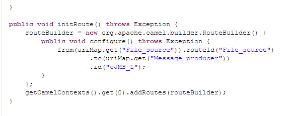
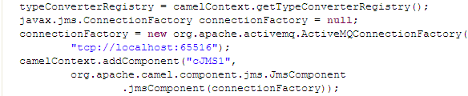

|
Component Family |
Messaging | |
|
Function |
cJMS allows messages to be sent to (or consumed from) a JMS Queue or Topic. | |
|
Purpose |
cJMS is used to send messages to, or consume messages from, a JMS Queue or Topic. | |
|
|
Endpoint URI/Type |
Select the messaging type, either queue or topic. |
|
|
Endpoint URI/Destination |
Type in a name for the JMS queue or topic. |
| Broker/MQ Server | Select an MQ server from ActiveMQ, Customized, or WebSphere MQ. | |
|
Broker/Broker URI (for ActiveMQ only) |
Type in the URI of the broker you use for message handling. For intra-Route message handling, you can simply use the default URI vm://localhost?broker.persistent=false. | |
|
|
Broker/Codes (for Customized only) |
Write a piece of code to specify the JMS connection factory to be used for handling messages. |
|
Broker/Dependencies (for Customized) | Specify the library or libraries required by the JMS connection factory from the list. | |
|
Broker/Host Name (for WebSphere MQ only) | Type in the name or IP address of the host on which the IBM WebSphere MQ server is running. | |
|
Broker/Port (for WebSphere MQ only) | Type in port of the IBM WebSphere MQ server, 1414 by default. | |
|
Broker/Transport Type (for WebSphere MQ only) | Select a type of message transport between the IBM WebSphere MQ server and the WebSphere MQ broker, client by default. | |
|
Broker/Queue Manager (for WebSphere MQ only) | Type in the name of the queue manager, or specify the name of the IBM WebSphere MQ server to find a queue manager. | |
|
Broker/Authentication (for WebSphere MQ only) | On some operating systems, select this check box and provide the username and password for the IBM WebSphere MQ server to validate the access permission. This option is not required on Windows. | |
|
Broker/Dependencies (for WebSphere MQ) | Specify additional libraries required by the IBM WebSphere MQ broker, which are normally provided with the server installer. | |
| Advanced settings | URI Options | Set the optional arguments in the corresponding table. Click [+] as many times as required to add arguments to the table. Then click the corresponding Value field and enter a value. See the site http://camel.apache.org/jms.html for available URI options. |
|
Usage |
cJMS can be a start, middle or end component in a Route. | |
|
Limitation |
n/a | |
In this scenario, a cJMS component sends messages from the local file system to a message queue in one Route, and the messages are then consumed by another cJMS component in another Route.
Message producer Route:
Message consumer Route:
Create a Route to implement the message producer.
From the Messaging folder of the Palette, drop a cFile component and a cJMS component onto the design workspace, one as the message source and the other as the message producer .
Connect the cFile component to the cJMS component using a Row > Route connection.
Create another Route to implement the message consumer.
From the Messaging folder of the Palette, drop a cJMS component onto the design workspace, to consume the messages produced in the previous Route.
From the Processor folder of the Palette, drop a cProcessor component onto the design workspace, to monitor the messages received by the message consumer.
Connect the cJMS component to the cProcessor component using a Row > Route connection.
Label the components in both Routes properly for better identification of their functionalities.
In the message producer Route, double-click the cFile component to display its Basic settings view.

Define the properties of the cFile component.
In this use case, simply specify the path to the folder that holds the source files to be sent as electronic messages, and leave the other parameters as they are.
Double-click the cJMS component, the message producer to display its Basic settings view.

From the Type list, select queue to send the messages to a JMS queue.
In the Destination field, type in the name of the JMS queue.
From the MQ Server list, select an MQ server. In this use case, we use the default ActiveMQ server to handle the messages.
In the Broker URI field, type in the URI of the message broker, tcp://localhost:65516 in this use case.
![[Note]](../images/note.png)
When using ActiveMQ to handle messages between different Routes, you need to launch the ActiveMQ server before executing the Routes. For more information on installing and launching ActiveMQ server, see the section about installing Apache ActiveMQ in the Talend ESB Installation Guide.
Switch to the message consumer Route, and double click the cJMS component, the message consumer to display its Basic settings view.

Configure the message consumer using exactly the same parameters as in the message producer in the message producer Route.
Double-click the cProcessor component to display its Basic settings view.

In the Code area, customize the code to display the file names of the consumed messages on the Run console.
Press Ctrl+S to save your Routes one after another.
Click the Code tab at the bottom of the design workspace to have a look at the generated code.
As shown in the two pieces of code taken from the message producer Route, a message route is built
fromtheFile_source.totheMessage_producer, which then sends the messages to a message queue via a broker identified bytcp://localhost:65516.Click the Run button in the Run view to run each of your Routes one after another. You can also press F6 to execute them.
RESULT: The messages are received by the consumer, as shown on the Run console of the message consumer Route.